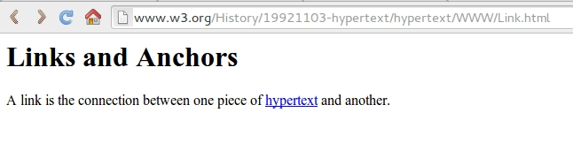
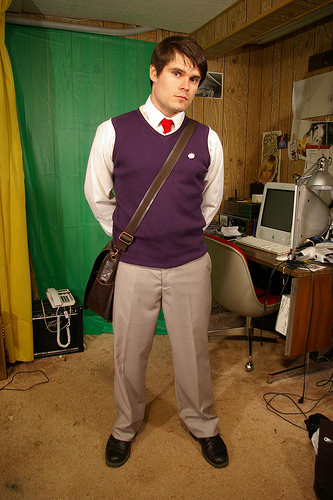

Votre diplôme
c'est vous !
Pierre Martin - @pierremartin

Qui suis-je ?
Développeur web, co-gérant

Diplômé en 2009 (INSA - ESC)
1990

1990-2000
- "Extreme programming"
- "Scrum"
- 1998 : Google
- 1999 : Sourceforge, J2EE, "Pragmatic Programmer"
2000's
- 2000 : PHP4
- 2001 : IE6, Hibernate, Wikipédia
- 2004 : Facebook, "Domain Driven Design"
- 2005 : Ruby On Rails
- 2008 : "Clean code"
Stages + Diplôme
Premier emploi ...
... puis une carrière
de développeur ?
professionnel ?
Soyez proactifs !
Exemple
Examens
... votre quotidien
Note = feedback
Professeurs
Role models / Mentors
Polycopiés
Réseau + Veille
Techniques, concepts, comportements, références / classiques + blogs
Exercices
Zone de confort
Projets personnels, Open source
Oui mais ...
- "C'est toujours sur mon temps libre"
- "J'ai pas le temps"
- "Mes collègues ne comprennent pas"
- Rythme soutenable (#8), excellence (#9), ajustements (#12)
Culture de l'apprentissage
The only thing needed is a passionate developer willing to start it. Stop finding excuses and be this developer.
Sandro Mancuso - Software Craftsmanship
Au delà du développement
Merci
real34.github.io/slides
@pierremartin